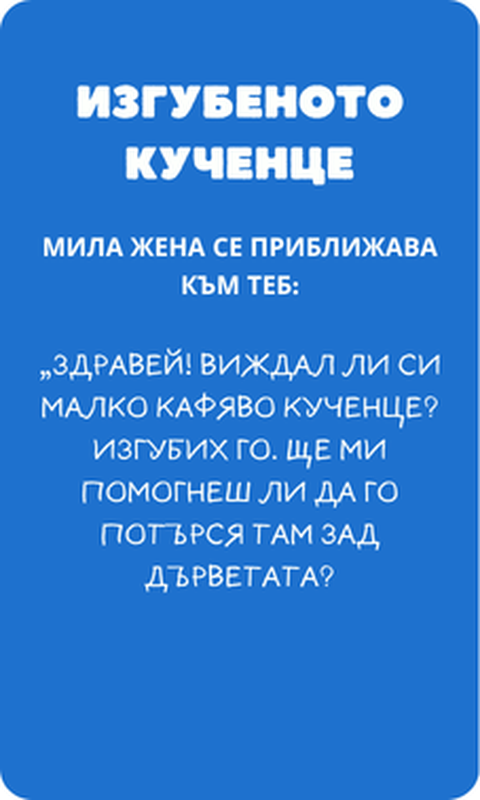
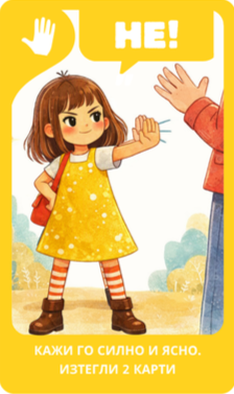
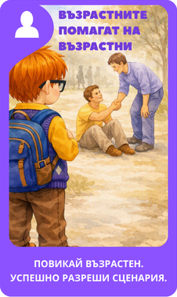

Твоето дете играе и учи със Смелчовците как да:
Обяснявам хиляди пъти, но тя е толкова доверчива…
Детето знае, че не трябва да взема бонбони от непознати и че не трябва да се качва в чужда кола.
Но в реална ситуация - когато е само и объркано, (не)познатият е усмихнат и любезен или изглежда безпомощен - ще разпознае ли опасността? И по-важното - ще съумее ли да действа правилно? А може би ще замръзне от любезност или страх?
Теорията помага, но умението за действие се изгражда само с повторение - и то много преди да е нужно.
На какво учи играта?
"Смелчовци в беда" е вдъхновена от съвременните препоръки за детска безопасност - включително разграничението между "непознат" и "човек с лоши намерения", което е много по-полезно за децата от простото "не говори с непознати." Играта учи детето:
-
Да се доверява на интуицията си, когато нещо не му се струва наред.
Да казва ясно и без вина "Не!"
Да пита родителите си преди да предприеме каквото и да е.
-
Да разпознава безопасни места и безопасни възрастни, към които да се обърне, когато близките му не са наблизо.
Че може просто да си тръгне от опасна ситуация, без да е длъжно да обяснява или да бъде учтиво.
-
Да споделя с близките си всяка ситуация, която го е накарала да се почувства неудобно - без значение колко малка изглежда.
-
Да познава конкретни принципи за безопасност - семейна парола, правилото "само възрастни помагат на възрастни" и защо никой доверен човек никога не иска от дете да пази тайна.
-
Да е осъзнато за реакциите, които му пречат в реална ситуация - замръзване, прекалена любезност, разсеяност. Не за да се срамува, а за да ги преодолява с практика.
-
Че да поиска помощ не е слабост, а разумен избор.
Че при беда е предимство да не e сам и че приятелите си помагат взаимно и се пазят.
Как работи играта?
-
1
Изтегляте ситуация.
(Не)познат иска помощ. Предлага изкушение. Кара те да пазиш тайна. Какво правиш?

-
2
Всеки избира карта от ръката си.
Кажи НЕ. Бягай. Кажи на близък. Правилната реакция, в точния момент.

-
3
Играчите си помагат и обсъждат заедно.
Всички отговарят правилно - всички споделят наградата.

Какво казват семействата?
Представи си този момент…
На площадката сте. Заговаряш се с друга майка и за секунда изпускаш детето си от поглед. Когато се обръщаш, виждаш непознат да говори с него. Но вместо вълна на паника, усещаш…спокойствие.
Наблюдаваш как детето ти прави крачка назад, казва нещо кратко, но уверено, обръща се и с бързи крачки идва при теб, за да ти разкаже какво се е случило. Без страх, без объркване, без колебание.
Това е усещането за истинска увереност. Това е моментът, в който осъзнаваш, че:
-
Детето ти знае как да се пази самостоятелно.
-
Изградила си невидима броня от умения и инстинкти.
-
Твоята тревожност е заменена с дълбоко вътрешно спокойствие.
-
Най-накрая можеш да си отдъхнеш, знаейки, че си му дала ценен подарък.
Въпроси и отговори
-
„Смелчовци в беда“ е игра с карти за деца на възраст от 5 до 9 години и техните близки - родители, баби и дядовци и приятели. Подходяща е за 2 до 5 играча. Една игра трае около 10 минути.
-
На 4 години играта може да работи в опростен вариант с активното участие на родител.
На 10 - детето вероятно ще търси по-голямо предизвикателство. Подготвяме версия за по-големи деца - запиши се в списъка и ще те уведомим първи.
-
Играта учи чрез различни ситуации и изиграване на глас. Всяко правилно действие се избира, казва и обсъжда.
Ако играете по една игра на седмица в продължение на месец, децата изиграват десетки сценарии.
Наградата в края прави победата обща, семейна цел, а не индивидуално постижение.
-
След като са запознати с играта - да. Силно препоръчваме поне първите игри да са с родител. Разговорът по време на играта е също толкова важен, колкото и самата игра, затова препоръчваме да се играе с поне един възрастен.
-
Не. Фокусът е върху това, което детето прави - не върху опасността. Всяка ситуация показва правилната реакция.
Илюстрациите са топли и меки и не създават тревожност и страх.
Играта не показва какво се случва, ако не отговориш правилно - просто семейството не споделя заедно наградата.
-
Всяка игра е различна.
Картите се разпределят по различен начин всяка игра - сценариите се появяват в различен ред, различни играчи получават различни карти. Препоръчваме кратки сесии от ~10 минути, редовно, защото рефлексът се изгражда с повторение.
-
В момента работим по финалните илюстрации и подготвяме първия тираж. Записалите се в списъка ще бъдат уведомени първи и ще имат възможност да закупят играта на специална цена преди публичното обявяване.
Записването е отворено
Ексклузивен достъп преди всички Специална цена за първите 100